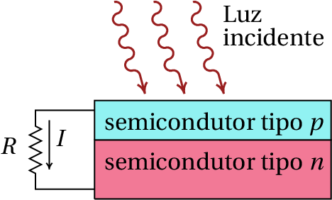
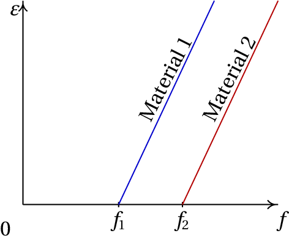

Descoberto por Hertz, em 1887, enquanto fazia experiências com ondas eletromagnéticas. A luz liberta eletrões num metal.
Hoje em dia, numa célula fotoelétrica a luz liberta eletrões no semicondutor tipo p, que passam para o semicondutor n, produzindo corrente $I$ no circuito.
A energia transferida para os eletrões libertados é a f.e.m. da célula fotoelétrica. Esperava-se que essa f.e.m. aumentasse com a intensidade da luz incidente, mas o que se observa na prática é que essa energia depende da frequência da luz e não da sua intensidade:
Cada material onde ocorre efeito fotoelétrico tem uma frequência lumiar para a luz incidente, por debaixo da qual não são libertados eletrões.